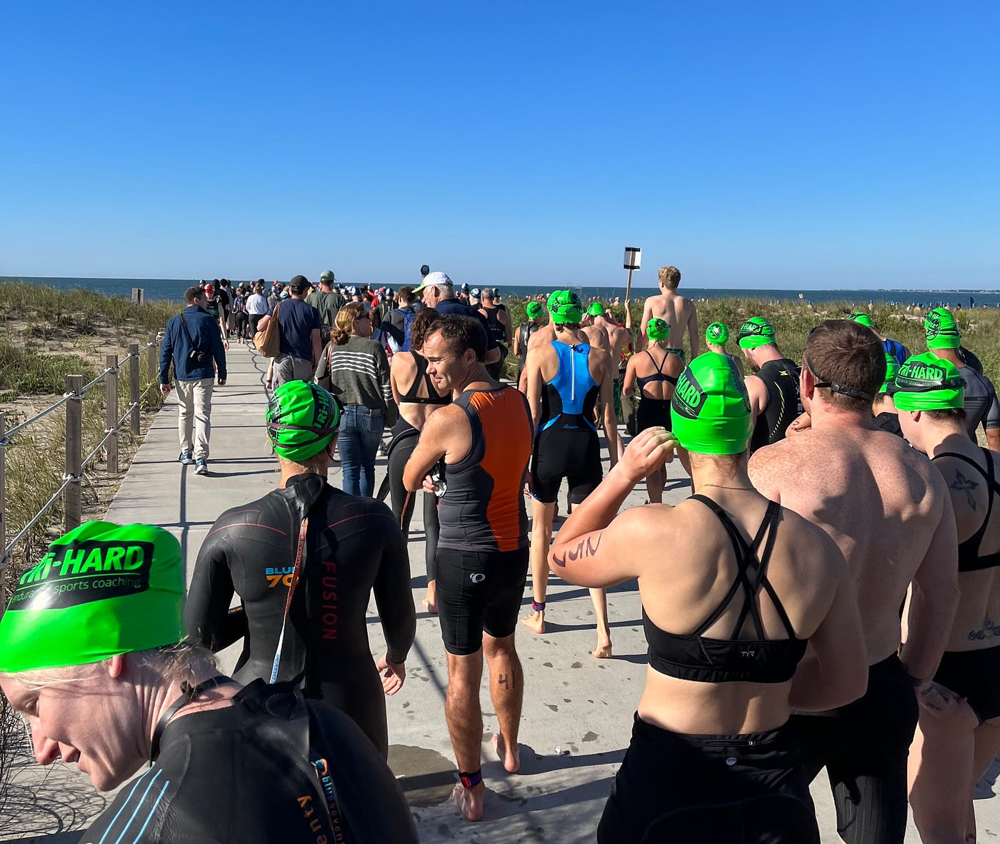
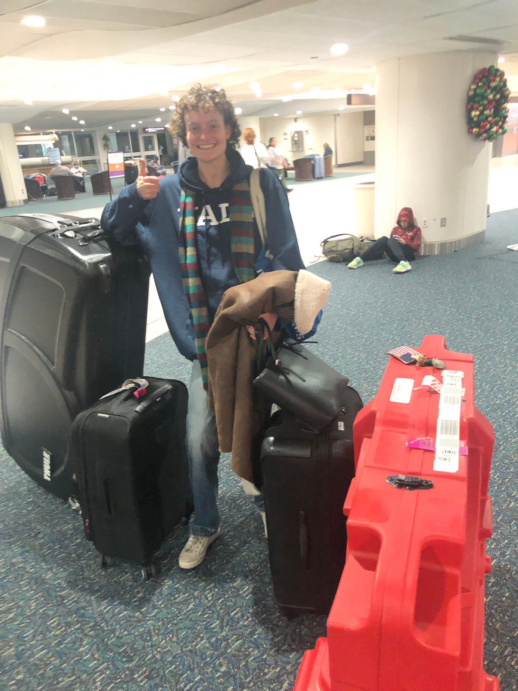
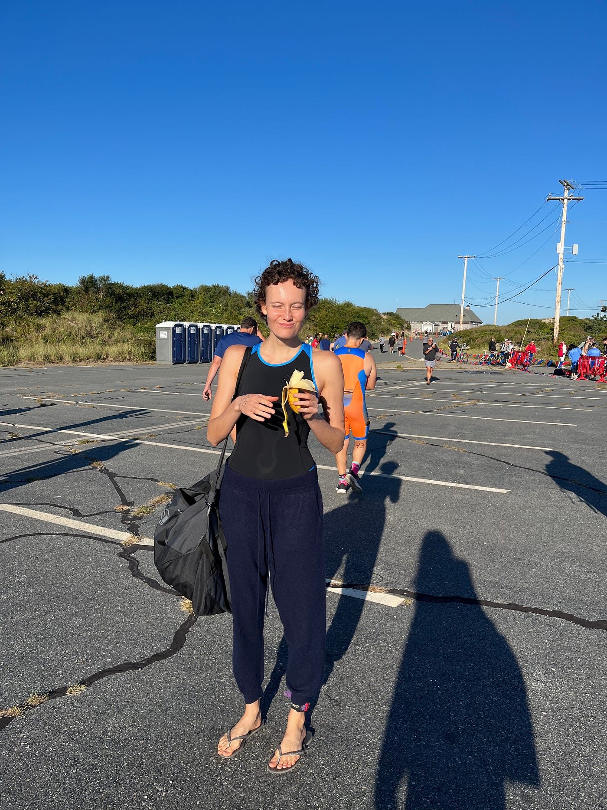
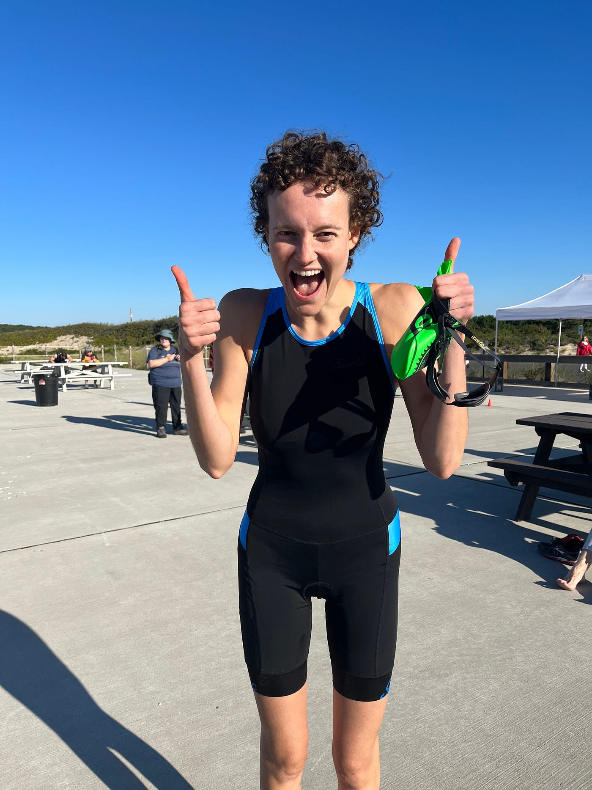
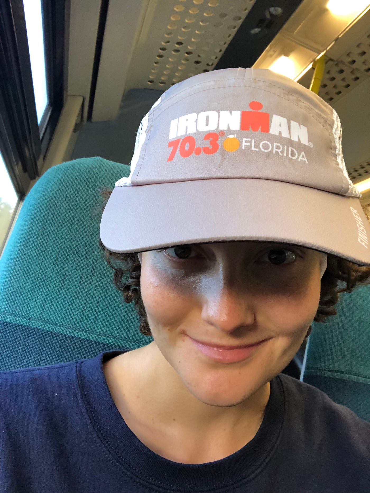
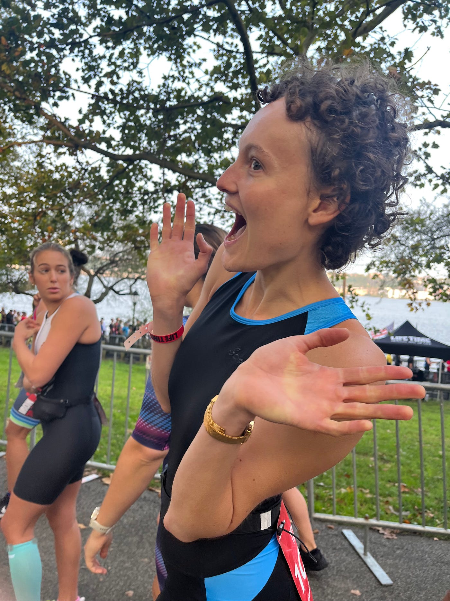

Going from Olympic triathlon to Ironman 70.3 in two months
Jan 2024
This is what it was like to train, what I learned, and what’s next.
The month of September had been my introduction into triathlon: I did a Sprint distance (1/4 of the 70.3) on September 17th with two weeks training, and an Olympic on October 1st (1/2 of the 70.3). I wrote about this more in depth in a previous post, but in short, the euphoria I felt after completing those races, and the crazy confidence boost of pushing my body to do things I never thought it could, got me thinking about the half. What ensued were two months of the most intense, draining and rewarding physical challenge I have ever put myself through.

What it was like to train
Any type of Ironman training is no joke. To most people, it seems like a commitment that requires massive sacrifice, but to me, it didn’t feel like sacrifice because it was what I WANTED and LOVED to be doing, so it just naturally took priority over everything else. It is 100% true, though, that if you decide to go after something like this, there are a few significant implications on your life.
1. You have less energy for anything else.
I was tired ALL THE TIME. This was partially because I could have done a much better job managing my classes, other commitments and training. I noticed that once I started sleeping more and eating more, this improved, but still, the load that I was putting on my body took its toll because it was unlike anything I’d experienced before. I found myself getting sleepy at 9, sometimes even 8pm. After the longest trainings, I’d have to take naps.
I really struggled to eat enough food, which would result in me doing worse during my training. I also underestimated how much you need to recover in between sessions — especially after the long runs / rides.
2. You socialize less.
It might also just be me during junior year of college, but I was SUPER particular about who I spent my time with. I barely partied at all, would only get meals with people I really, really wanted to see, and didn’t have any patience for conversations or interactions with people that I deemed uninteresting. There were many times when I had the option to go out, but I didn’t want to because in my head I was thinking “I need to sleep because I have a big training session tomorrow morning.”
I think this also had to do with point #1 — I literally did not have additional energy to go out and party, or to entertain people that I didn’t truly want to be around. I just wanted to sleep.
3. You get really fit.
This one’s a no brainer. But watching myself progress each week to do harder and longer workouts was insane. I remember the first time I swam for 30 minutes, biked for 2h, ran 10 miles… in the lead up to the 70.3, I was able to do training sessions that were longer than the time it took me to do the Olympic, which back then I was scared of not even finishing.
4. You get emotional.
I’m naturally a quite ~mercurial~ person, but these two months felt like an emotional rollercoaster, even for me. I often oscillated quickly between “I am such a TANK. I should be doing a full Ironman in December, not a half. I am literally invincible” to “how tf am I ever going to crawl my way to the finish line of this race”.
5. You feel like a total badass.
Because even though sometimes you fail to do the training you set out for yourself, you come short of a distance you were aiming for, or you get injured and it takes you longer to recover than expected… you are still trying, and learning, and doing something that most people will never be able to do.
When I look back at myself one month, half a year, or a year before, compared to where I am now… there’s nothing better than seeing how much you’ve improved, & being able to do things that you once thought impossible.
6. You become obsessed.
I found myself thinking about triathlon ALL. THE. TIME. I became self-conscious when talking to my friends about it because I felt like it was probably the only thing I talked about.
If I wasn’t training, I was thinking about training. I was planning my recovery, or my next workout, or what gels I was going to try, or where I was going to find clip in shoes, or what time the pool was open… etc. It was all-consuming.
To elaborate, few things that I didn’t realize were going to take up so much of my headspace were: equipment, nutrition and logistics.
Equipment
Figuring out what kind of bike pedals and clip-in shoes to get, the type of water bottles I would use during the race, how to use an indoor trainer, goggles that didn’t leak, and many other details were all crucial and stressful. The week of the race, my Coach lent me a bike jersey and a bike box (to transport the bike in) because I didn’t even realize I needed those.
I also had help pumping air into my tires, disassembling the bike for travel, and with many other equipment-related questions. I regret not figuring these things out sooner and having more time to train with them rather than just on the indoor stationary bike at my gym.


Nutrition
This took up a crazy amount of my mental energy. It can truly make or break your race. Testing out different gels, electrolyte mixes and nutrition strategies takes lots and lots of trial and error. I still have a very far way to go with this because I ended up messing it up anyways during the race, which I write about here.
When training for the Olympic, I wanted to avoid gels, but I knew this would be incredibly difficult in a half. The first time I ever tried a gel — I LOVED it. It feels when Mario gets the star and ALL OF A SUDDEN THE MUSIC SPEEDS UP AND YOU’RE ZOOMING.
I have a friend that did a half Ironman and barely planned this part — she is WAY more athletic than me, with a much more extensive endurance background and had an incredibly fast time. I do not have the liberty NOT to plan this, because as someone that is not naturally at all good at or experienced with endurance I need all the help I can get.
Logistics
Imagine the normal logistical headache of planning a weekend trip, but with the additional detail of having a crazy amount of equipment that you get to carry everywhere. While I lowkey enjoyed the weird glances people gave me (“wtf is that girl carrying in that massive box on wheels?”) it was a lot to keep track of.
Final Thoughts
I recently came across an article I wrote almost a year ago, in which I said:
“We all have that one friend that likes to do triathlons or other crazy feats for fun. They seem superhuman.”
What a wild, full circle moment. Reading that almost made me cry. To think about how far I’ve come — wow.
My goal for Fall semester of 2023 was to do a triathlon. My goal for Spring 2024 is to do a full Ironman.
I’ve officially registered not only for the race but for 4 more months of grueling, exhausting, exhilarating, empowering training, because I fell in love with a sport that pushes you to do the impossible.


